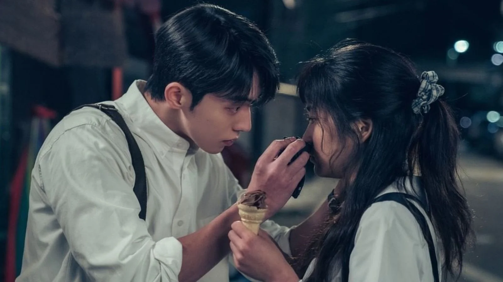

Twenty-Five Twenty-One
Twenty-Five Twenty-One is a South Korean television series directed by Jung Ji-hyun and
starring Kim Tae-ri, Nam Joo-hyuk, Bona, Choi Hyun-wook and Lee Joo-myung. The series depicts
the romantic lives of five characters spanning from the year of 1998 to 2021. It premiered on
tvN on February 12, 2022, and aired every Saturday and Sunday at 21:10 (KST) for 16
episodes. It is available for streaming on Netflix.
The series was a commercial hit and
became one of the highest-rated dramas in Korean cable television history.
Plot
In 1998, Na Hee-do (Kim Tae-ri) is a member of the school fencing team at Seonjung Girls' High School,
but due to the IMF crisis, the team is disbanded. To continue pursuing her passion, she transfers
to Taeyang High School and later manages to become a member of the National Fencing Team. Baek Yi-jin's
(Nam Joo-hyuk) family goes from "riches to rags" and is separated due to the financial crisis. He is
forced to take up several part-time jobs and later becomes a sports reporter.
In present day, Kim Min-chae
(Choi Myung-bin), Na Hee-do's daughter, quits ballet and "runs away" to her grandma's house. During her stay,
she comes across her mother's diary, through which the story is then told.
Source: Wikipedia